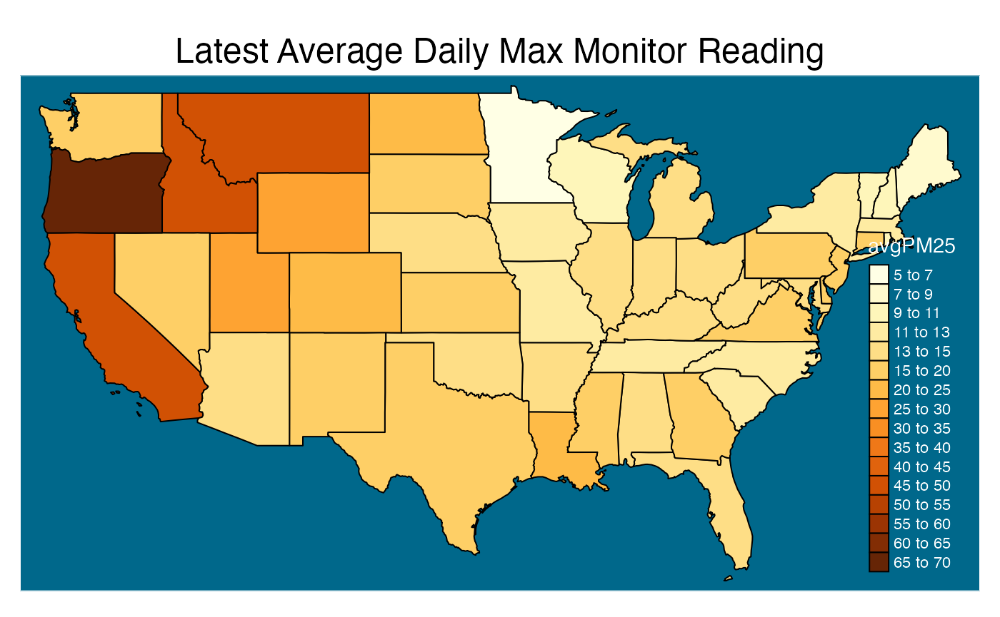
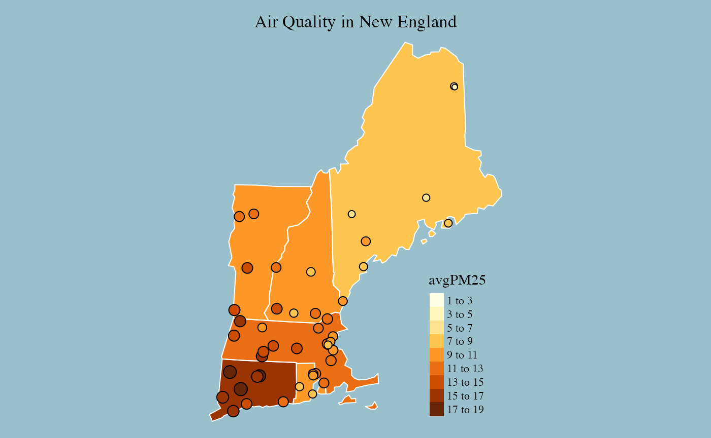
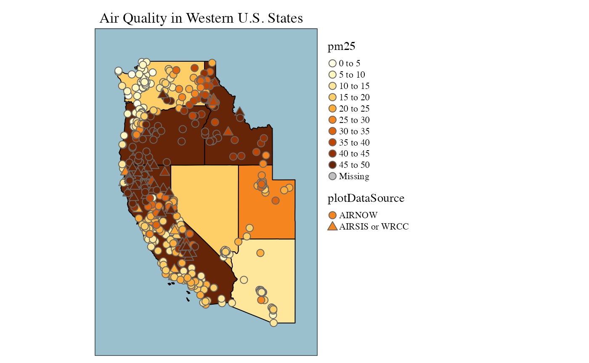

Working with Locations
Rachel Carroll, Mazama Science
August 7, 2020
Source:vignettes/articles/Working_with_Locations.Rmd
Working_with_Locations.RmdObjective
The objective of this article is to demonstrate how to make detailed maps from air quality monitoring data. The PWFSLSmoke package is used to extract and manipulate the air quality monitoring data from AIRNOW, AIRSIS and WRCC. This data contains particulate matter 2.5 (PM2.5) concentrations at the monitor locations over time. In this demonstration, we create maps that display monitor locations, air quality statistics at monitor locations, and average air quality in a given region.
Prepare Monitor Data
There are several functions in the PWFSLSmoke package that can be used to load air quality monitoring data:
-
monitor_load()- Loads data from a given time range. For example,monitor_load(20170601, 20171001)brings in all readings between 06/01/17 and 10/01/17. -
monitor_loadAnnual()- Loads all data from a given year. For examplemonitor_loadAnnual(2018)pulls in all 2018 data. -
monitor_loadDaily()- Loads the past 45 days of data, up to midnight of the most recent full day. -
monitor_loadDaily()- Loads the past 10 days of data, up the current hour.
These functions load in the data as a ws_monitor object, which contains 1) a dataframe with air quality monitor readings over time and 2) the monitor-level metadata with characteristics such as monitor locations.
In the example below, data from the past 10 days is loaded and monitor-level calculations are performed. The data can be summarized in any way deemed relevant so long as there is one measurement per monitor. This allows us to color monitor location points based on the monitor’s PM2.5 value reading. To accomplish this, the data can be summarized over time or data can be extracted at a specific point in time. In this case, the former method is used to calculate the maximum daily average for each monitor.
library(MazamaSpatialPlots)
library(PWFSLSmoke)
# Load data
monitorLatestData <- PWFSLSmoke::monitor_loadLatest() #past 10 days of data, up to the current hour
# Prepare Data: Subset and summarize based on desired information
# calculating maximum daily average (one record per monitor)
dailyMax <-
monitorLatestData %>%
PWFSLSmoke::monitor_dailyStatistic(minHours = 2) %>% # daily average
PWFSLSmoke::monitor_extractData() %>%
tidyr::pivot_longer(-datetime, names_to = "monitorID", values_to = "value") %>%
dplyr::group_by(monitorID) %>%
dplyr::summarise(pm25 = max(value, na.rm = TRUE)) %>% # taking maximum daily average
dplyr::left_join(monitorLatestData$meta, by = 'monitorID') %>%
dplyr::select(
c('monitorID', 'stateCode', 'latitude', 'longitude', 'pwfslDataIngestSource', 'pm25'))
# Clean pm25 column by setting -Inf values to NA
dailyMax$pm25 <- replace(dailyMax$pm25, dailyMax$pm25 == -Inf, NA)Now, the ws_monitor object, monitorLatestData and the monitor-level dataframe, dailyMax, can be used to create air quality maps as demonstrated in the following sections.
Plot Monitor Locations
To simply plot monitor locations without colors, monitor-level calculations are not yet needed. Instead, the metadata of monitorLatestData can be used directly. We also introduce a U.S. state Spatial Polygons Data Frame (SPDF) so the monitor locations will appear on a map of U.S. states.
# Get state codes and only include continental US states
stateCodeList <- unique(monitorLatestData$meta$stateCode)
stateCodeList <- subset(
stateCodeList, stateCodeList %in% MazamaSpatialUtils::CONUS
)
# Create subsetted U.S. state SPDF
stateSPDF <- subset(USCensusStates_02, stateCode %in% stateCodeList)
# Plot U.S. state SPDF
plot(stateSPDF)
# Overlay monitor location points
# NOTE: can use either dailyMax or monitorLatestData$meta since both have metadata
points(monitorLatestData$meta$longitude, monitorLatestData$meta$latitude)
points(monitorLatestData$meta$longitude, monitorLatestData$meta$latitude)
Another method to map monitor loactions is to use the monitor_map() function from PWFSLSmoke. In fact, this function can also color the monitor location points (by default, the maximum measurement per monitor is used to color the points). This function is very useful when taking a quick look across the continental U.S. However, the method above allows for some more flexibility in subsetting states and calculating desired monitor-level statistics.
# method 2 using monitor_map() from PWFSLSmoke
PWFSLSmoke::monitor_map(monitorLatestData,
countyCol = NA,
colors = 'grey50',
stateCol = "black",
pch = 3,
stateLwd = 3)
Plot Monitor Values
To build upon the examples above, this section shows how to plot points on a map with added visual customizations. To create descriptive visualizations of this nature, it is a good idea to transform the locations data into a SPDF. This is because SPDFs are compatible with the tmap package, which allows us to create attractive maps with high flexibility.
Below, monitor locations are again plotted on a plain continental U.S. map. In this example, however, tmap is used so the overall layout, color schemes, legend break points, and point shapes are easily specified. Notice that AIRNOW monitors are displayed as circles and AIRSIS and WRCC monitors are triangles. This is done by simply defining the shape parameter in tm_symbols() with the data source column. This cannot be done using PWFSLSmoke::monitor_map() and would require longer messier code to create directly using plot() and points().
# transform monitorLatestData into a SPDF
# TODO: make this a function called monitor_toSPDF ?????
geojson_file <- tempfile(fileext = ".geojson")
current_geojson <- monitor_writeCurrentStatusGeoJSON(monitorLatestData, geojson_file)
current_list <- jsonlite::fromJSON(current_geojson)
monitorSPDF <- rgdal::readOGR(dsn = geojson_file, verbose = FALSE)
# bring in pm25 field from dailyMax
monitorSPDF@data <- monitorSPDF@data %>%
dplyr::left_join(dailyMax[, c("monitorID", "pm25")], by = "monitorID") %>%
dplyr::mutate(
plotDataSource = ifelse(
pwfslDataIngestSource == "AIRNOW",
"AIRNOW",
"AIRSIS or WRCC")
) %>%
dplyr::select(
c("monitorID", "stateCode", "longitude", "latitude", "plotDataSource", "pm25")
)
#createMap
tmap::tm_shape(stateSPDF,
bbox = bbox(monitorSPDF) #use monitor bbox
) +
tmap::tm_polygons(
col = "grey85",
border.col = "black") +
tmap::tm_shape(monitorSPDF) + # plot colored monitor location points
tmap::tm_symbols(
col = "pm25",
palette = "Reds",
breaks = c(seq(0, 50, 5), 1000), # NOTE: all values are between 0 and 50 except 2 (outliers?)
shape = "plotDataSource", # shape of points will depend on the monitor source
shapes = c(16, 17), # specify circles and triangle shapes
scale = .4) +
tmap::tm_layout(
main.title = "Latest Average Daily Max Monitor Reading",
main.title.position = c("center", "top"),
bg.color = "deepskyblue4",
attr.color = "white",
legend.position = c("left", "center")
)
Plot Polygon Summarized Values
In this section MazamaSpatialUtils::summarizeByPolygon() is introduced. The purpose of this function is to summarize spatial data by regions defined by the polygons in a given SPDF. For example, using a U.S. state level SPDF would summarize the data by state while a U.S. county SPDF would summarize by county. The input spatial data must contain latitude, longitude, and a value to be summarized.
Below, MazamaSpatialUtils::summarizeByPolygon() is used with a U.S. state SPDF and the dataframe dailyMax (created in the “Prepare Monitor Data” section) to find average PM2.5 readings by state. These state-level values are incorporated into the state SPDF’s data @slot so the map can be colored by the summarized values.
# replacing NA with 0.
# NOTE: should add na.rm argument to summarizeByPolygon() so we can
# NOTE: use dailyMax$pm25 directly in the function. This step will bring down
# NOTE: the average value which is NOT GOOD
stateSPDF <- subset(USCensusStates_02, stateCode %in% stateCodeList)
newValueVector <- replace(dailyMax$pm25, is.na(dailyMax$pm25), 0)
# Summarize by State
stateSummarizedDF <- MazamaSpatialUtils::summarizeByPolygon(
longitude = dailyMax$longitude,
latitude = dailyMax$latitude,
value = newValueVector,
SPDF = stateSPDF,
useBuffering = TRUE,
FUN = mean
)
# add summarized values to stateSPDF@data
stateSPDF@data <- stateSPDF@data %>%
dplyr::left_join(stateSummarizedDF, by = "polygonID") %>%
dplyr::mutate(avgPM25 = summaryValue)
#createMap
tmap::tm_shape(stateSPDF) +
tmap::tm_polygons(
col = "avgPM25",
breaks = c(seq(5, 13, 2), seq(15, 70, 5)),
border.col = "black") +
tmap::tm_layout(
main.title = "Latest Average Daily Max Monitor Reading",
main.title.position = c("center", "top"),
bg.color = "deepskyblue4",
attr.color = "white",
legend.position = c("right", "bottom")
)
Sprinkle Points on Summarized Value Maps
In this section, we use both the state-level and monitor-level SPDFs to create a map with states colored by average air quality and monitor location points colored and sized by the maximum daily average PM2.5 concentrations
In the example below MazamaSpatialPlots::stateMap() is used for the state-level map and colors. It is appended by tmap functions to overlay the monitor location points.
#subset SPDFs
selectedStateCodeList <- c('ME', 'NH', 'VT', 'MA', 'RI', 'CT')
selectedStateSPDF <- subset(stateSPDF, stateCode %in% selectedStateCodeList)
selectedMonitorSPDF <- subset(monitorSPDF, stateCode %in% selectedStateCodeList)
# Now use different size markers since all are AIRNOW in new england
stateMap(
data = selectedStateSPDF@data,
parameter = "avgPM25", # color states by average PM Value
stateCode = selectedStateCodeList,
stateBorderColor = 'white',
breaks = seq(1, 20, 2),
) +
tmap::tm_shape(selectedMonitorSPDF) + # plot points of each monitor location with color
tmap::tm_bubbles( # and size based on PM value reading of the monitor
size = "pm25",
col = "pm25",
border.col = 'black',
breaks = seq(1, 20, 2),
scale = .9,
legend.size.show = F,
legend.col.show = F
) +
tmap::tm_layout(
main.title = 'Air Quality in New England',
main.title.size = 1.1,
fontfamily = "serif",
bg.color = "lightblue3",
)
This next example only uses tmap functions. The tm_symbols() function is used to plot the monitor locations so the point shapes can be specified.
#subset SPDFs
selectedStateCodeList <- c("CA", "OR", "WA", "NV", "ID", "UT", "AZ")
selectedStateSPDF <- subset(stateSPDF, stateCode %in% selectedStateCodeList)
selectedMonitorSPDF <- subset(monitorSPDF, stateCode %in% selectedStateCodeList)
# can also do it with just tmap
tmap::tm_shape(selectedStateSPDF) +
tmap::tm_polygons(
col = "avgPM25",
palette = "YlOrBr",
border.col = "black",
breaks = seq(0, 50, 5),
legend.show = FALSE) +
tmap::tm_shape(selectedMonitorSPDF) + # plot points of each monitor location with color
tmap::tm_symbols( # and size based on PM value reading of the monitor
col = "pm25",
palette = "YlOrBr",
breaks = seq(0, 50, 5),
shape = "plotDataSource",
shapes = c(21, 24),
scale = .6
) +
tmap::tm_layout(
main.title = "Air Quality in Western U.S. States",
main.title.position = c("left", "top"),
main.title.size = 1.1,
fontfamily = "serif",
legend.outside = T,
bg.color = "lightblue3",
inner.margins = .1,
)
Conclusion
Using a few key functions from the Mazama spatial packages and PWFSLSmoke makes it easy to create detailed and descriptive maps containing both regional averages as well as spatial data point measurements. The examples in this article demonstrate one of many ways to leverage these functions. This article also demonstrates a method of working with time series data. A natural extension would be to create similar plots at incrementing points in time to identify recent air quality trends.